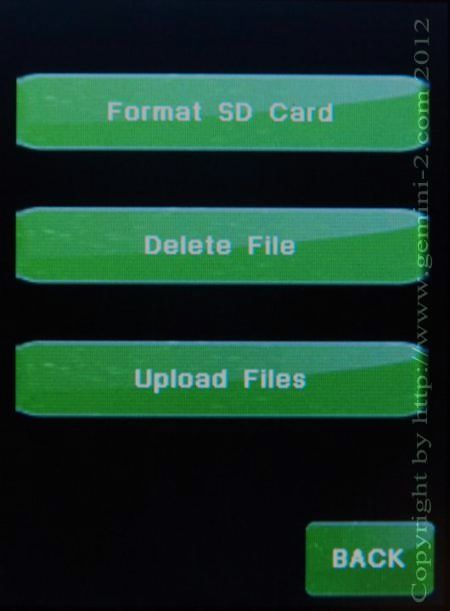

| Interactive Hand-Controller Menus - click on green button to Navigate |
|  |
This menu will let you format the micro-SDcard in the hand-controller, Delete files
and catalogs from it, or upload files/catalogs to it.
The Format selection will completely wipe out the micro-SDcard of all if its files. Once that is done, you can reload the files by putting them in the HCFirmware directory of the main units micro-SDcard, and then hitting Upload Files. When you select format SD card another screen will come up asking if you are sure, No or Yes. The Delete File button will bring up the list of catalogs and any other file stored in the catalog directories. You can only delete whole catalogs, not the individual entries in them. The reason for this is that a catalog is really a single file. You can also use this Upload Files to upload additional catalogs to the hand controller. You can create your own custom catalogs and upload them this way. The easiest way to do this is use the Windows File Explorer in an FTP mode. Do this by typing ftp://admin@gemini into the file manager bar at the top of Windows explorer. (not an Internet browser) If you have your Gemini-2 connected to your computer via Ethernet, then you should see the contents of the G2 main micro-SDcard contents. |
| YOU CANNOT USE THE UPLOAD FILES FUNCTION TO DO A FIRMWARE UPDATE. |